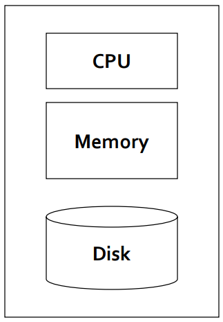
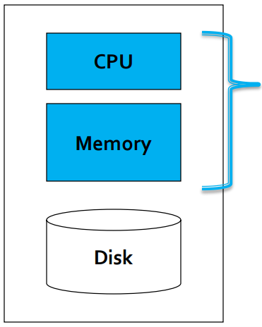
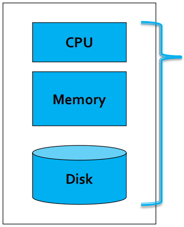
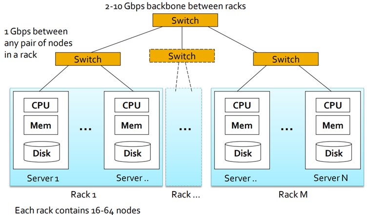
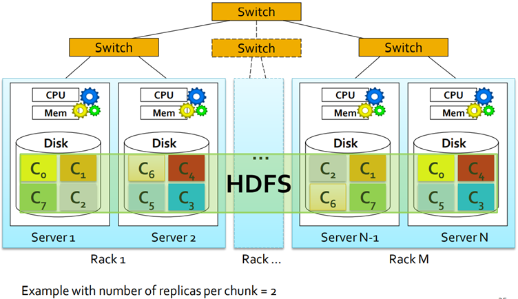
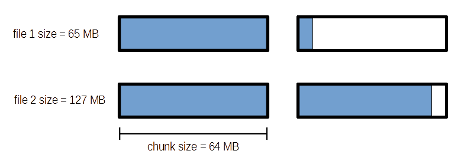
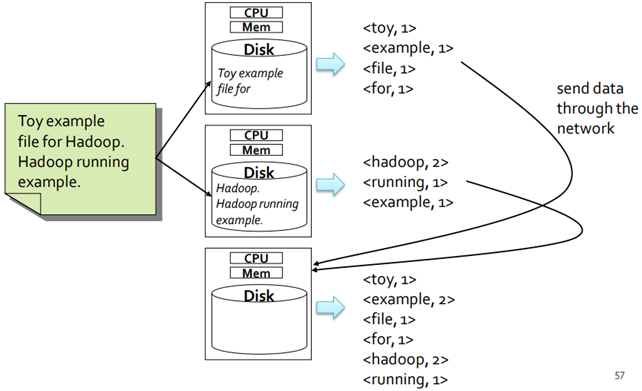
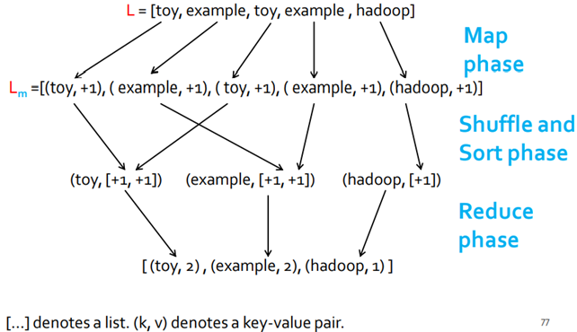

5 Introduction to Hadoop and MapReduce
Motivations of Hadoop and Big data frameworks
Data volumes
- The amount of data increases every day
- Some numbers (∼2012):
- Data processed by Google every day: 100+ PB
- Data processed by Facebook every day: 10+ PB
- To analyze them, systems that scale with respect to the data volume are needed
Consider this situation: you have to analyze 10 billion web pages, and the average size of a webpage is 20KB. So
- The total size of the collection: 10 billion x 20KBs = 200TB
- Assuming the usage of HDD hard disk (read bandwidth: 150MB/sec), the time needed to read all web pages (without analyzing them) is equal to 2 million seconds (i.e., more than 15 days).
- Assuming the usage of SSD hard disk (read bandwidth: 550MB/sec), the time needed to read all web pages (without analyzing them) is equal to 2 million seconds (i.e., more than 4 days).
- A single node architecture is not adequate
Failures
Failures are part of everyday life, especially in a data center. A single server stays up for 3 years (~1000 days). Statistically
- With 10 servers: 1 failure every 100 days (~3 months)
- With 100 servers: 1 failure every 10 days
- With 1000 servers: 1 failure/day
The main sources of failures
- Hardware/Software
- Electrical, Cooling, …
- Unavailability of a resource due to overload
LALN data [DSN 2006]
- Data for 5000 machines, for 9 years
- Hardware failures: 60%, Software: 20%, Network 5%
DRAM error analysis [Sigmetrics 2009]
- Data for 2.5 years
- 8% of DIMMs affected by errors
Disk drive failure analysis [FAST 2007]
- Utilization and temperature major causes of failures
Failure types
- Permanent (e.g., broken motherboard)
- Transient (e.g., unavailability of a resource due to overload)
Network bandwidth
Network becomes the bottleneck if big amounts of data need to be exchanged between nodes/servers. Assuming a network bandwidth (in a data centre) equal to 10 Gbps, it means that moving 10 TB from one server to another would take more than 2 hours. So, data should be moved across nodes only when it is indispensable.
Instead of moving data to the data centre, the code (i.e., programs) should be moved between the nodes: this approach is called Data Locality, and in this way very few MBs of code are exchanged between the severs, instead of huge amount of data.
Architectures
Single node architecture


Small data: data can be completely loaded in main memory.

Large data: data can not be completely loaded in main memory.
- Load in main memory one chunk of data at a time, process it and store some statistics
- Combine statistics to compute the final result
Cluster architecture
To overcome the previously explained issues, a new architecture based on clusters of servers (i.e., data centres) has been devised. In this way:
- Computation is distributed across servers
- Data are stored/distributed across servers
The standard architecture in the Big data context (∼2012) is based on
- Cluster of commodity Linux nodes/servers (32 GB of main memory per node)
- Gigabit Ethernet interconnection
Commodity cluster architecture

The servers in each rack are very similar to each other, so that the servers would take the same time to process the data and none of them will become a bottleneck for the overall processing.
Notice that
- In each rack, the servers are directly connected with each other in pairs
- Racks are directly connected with each other in pairs
Scalability
Current systems must scale to address
- The increasing amount of data to analyze
- The increasing number of users to serve
- The increasing complexity of the problems
Two approaches are usually used to address scalability issues
- Vertical scalability (scale up)
- Horizontal scalability (scale out)
Scale up vs. Scale out
- Vertical scalability (scale up): add more power/resources (i.e., main memory, CPUs) to a single node (high-performing server). The cost of super-computers is not linear with respect to their resources: the marginal cost increases as the power/resources increase.
- Horizontal scalability (scale out): add more nodes (commodity servers) to a system. The cost scales approximately linearly with respect to the number of added nodes. But data center efficiency is a difficult problem to solve.
For data-intensive workloads, a large number of commodity servers is preferred over a small number of high-performing servers, since, at the same cost, it is possible to deploy a system that processes data more efficiently and is more fault-tolerant.
Horizontal scalability (scale out) is preferred for big data applications, but distributed computing is hard: new systems hiding the complexity of the distributed part of the problem to developers are needed.
Cluster computing challenges
- Distributed programming is hard
- Problem decomposition and parallelization
- Task synchronization
- Task scheduling of distributed applications is critical: assign tasks to nodes by trying to
- Speed up the execution of the application
- Exploit (almost) all the available resources
- Reduce the impact of node failures
- Distributed data storage
How to store data persistently on disk and keep it available if nodes can fail? Redundancy is the solution, but it increases the complexity of the system.
- Network bottleneck
Reduce the amount of data send through the network by moving computation and code to data.
Distributed computing is not a new topic
- HPC (High-performance computing) ~1960
- Grid computing ~1990
- Distributed databases ~1990
Hence, many solutions to the mentioned challenges are already available, but we are now facing big data-driven problems: the former solutions are not adequate to address big data volumes.
Typical Big data problem
The typical way to address a Big Data problem (given a collection of historical data)
- Iterate over a large number of records/objects
- Extract something of interest from each record/object
- Aggregate intermediate results
- Generate final output
Notice that, if in the second step it is needed to have some kind of knowledge of what’s in the other records, this Big data framework is not the best solution: the computations on isolated records is not possible anymore, and so this whole architecture is not suitable.
The challenges:
- Parallelization
- Distributed storage of large data sets (Terabytes, Petabytes)
- Node Failure management
- Network bottleneck
- Diverse input format (data diversity & heterogeneity)
Apache Hadoop
It is scalable fault-tolerant distributed system for Big Data
- Distributed Data Storage
- Distributed Data Processing
It borrowed concepts/ideas from the systems designed at Google (Google File System for Google’s MapReduce). It is open source project under the Apache license, but there are also many commercial implementations (e.g., Cloudera, Hortonworks, MapR).
| Date | Event |
|---|---|
| Dec 2004 | Google published a paper about GFS |
| July 2005 | Nutch uses MapReduce |
| Feb 2006 | Hadoop becomes a Lucene subproject |
| Apr 2007 | Yahoo! runs it on a 1000-node cluster |
| Jan 2008 | Hadoop becomes an Apache Top Level Project |
| Jul 2008 | Hadoop is tested on a 4000 node cluster |
| Feb 2009 | The Yahoo! Search WebMap is a Hadoop application that runs on more than 10,000 core Linux cluster |
| Jun 2009 | Yahoo! made available the source code of its production version of Hadoop |
| 2010 | Facebook claimed that they have the largest Hadoop cluster in the world with 21 PB of storage |
| Jul 27, 2011 | Facebook announced the data has grown to 30 PB |
Who uses/used Hadoop
- Amazon
- IBM
- Joost
- Last.fm
- New York Times
- PowerSet
- Veoh
- Yahoo!
Hadoop vs. HPC
Hadoop
- Designed for Data intensive workloads
- Usually, no CPU demanding/intensive tasks
HPC (High-performance computing)
- A supercomputer with a high-level computational capacity (performance of a supercomputer is measured in floating-point operations per second (FLOPS))
- Designed for CPU intensive tasks
- Usually it is used to process “small” data sets
Main components
Core components of Hadoop:
- Distributed Big Data Processing Infrastructure based on the MapReduce programming paradigm
- Provides a high-level abstraction view: programmers do not need to care about task scheduling and synchronization
- Fault-tolerant: node and task failures are automatically managed by the Hadoop system
- HDFS (Hadoop Distributed File System)
- High availability distributed storage
- Fault-tolerant
Hadoop virtualizes the file system, so that the interaction resembles a local file system, even if this case it spans on multiple disks on multiple servers.
So Hadoop is in charge of:
- splitting the input files
- store the data in different servers
- managing the reputation of the blocks

Notice that, in this example, the number of replicas (i.e., the number of copies) of each block (e.g., \(C_0\), \(C_1\), \(C_6\), etc.) is equal to two. Multiple copies are needed to correctly manage server failures: two copies are never stored in the same server.
Notice that, with 2 copies of the same file, the user is always sure that 1 failure can be managed with no interruptions in the data processing and without the risk of losing data. In general, the number of failures that and HDFS can sustain with no repercussions is equal to \((\textbf{number of copies})-1\).
When a failure occures, Hadoop immediately starts to create new copies of the data, to reach again the set number of replicas.
Distributed Big data processing infrastructure
Hadoop allows to separate the what from the how because Hadoop programs are based on the MapReduce programming paradigm:
- MapReduce abstracts away the “distributed” part of the problem (scheduling, synchronization, etc), so that programmers can focus on the what;
- the distributed part (scheduling, synchronization, etc) of the problem is handled by the framework: the Hadoop infrastructure focuses on the how.
But an in-depth knowledge of the Hadoop framework is important to develop efficient applications: the design of the application must exploit data locality and limit network usage/data sharing.
HDFS
HDFS is the standard Apache Hadoop distributed file system. It provides global file namespace, and stores data redundantly on multiple nodes to provide persistence and availability (fault-tolerant file system).
The typical usage pattern for Hadoop:
- huge files (GB to TB);
- data is rarely updated (create new files or append to existing ones);
- reads and appends are common, and random read/write operations are not performed.
Each file is split in chunks (also called blocks) that are spread across the servers.
- Each chunck is replicated on different servers (usually there are 3 replicas per chunk), ensuring persistence and availability. To further increase persistence and availability, replicas are stored in different racks, if it possible.
- Each chunk contains a part of the content of one single file. It is not possible to have the content of two files in the same chunk/block
- Typically each chunk is 64-128 MB, and the chunk size is defined when configuring Hadoop.

Each square represents a chunk in the HDFS. Each chunk contains 64 MB of data, so file 1 (65 MB) sticks out by 1 MB from a single chunk, while file 2 (127 MB) does not completely fill two chunks. The empty chunk portions are not filled by any other file.
So, even if the total space occupied from the files would be 192 MB (3 chunks), the actual space they occupy is 256 (4 chunks): Hadoop does not allow two files to occupy the same chunk, so that two different processes would not try to access a block at the same time.
The Master node, (a.k.a., Name Nodes in HDFS) is a special node/server that
- Stores HDFS metadata (e.g., the mapping between the name of a file and the location of its chunks)
- Might be replicated (to prevent stoppings due to the failure of the Master node)
Client applications can access the file through HDFS APIs: they talk to the master node to find data/chuck servers associated with the file of interest, and then connect to the selected chunk servers to access data.
The HDFS and the YARN scheduler are the two main components of Hadoop, however there are modules, and each project/system addresses one specific class of problems.
- Hive: a distributed relational database, based on MapReduce, for querying data stored in HDFS by means of a query language based on SQL;
- HBase: a distributed column-oriented database that uses HDFS for storing data;
- Pig: a data flow language and execution environment, based on MapReduce, for exploring very large datasets;
- Sqoop: a tool for efficiently moving data from traditional relational databases and external flat file sources to HDFS;
- ZooKeeper: a distributed coordination service, that provides primitives such as distributed locks.
- …
The integration of these components with Hadoop is not as good as the integration of the Spark components with Spark.
MapReduce: introduction
Word count
| Input | Problem | Output |
|---|---|---|
| a large textual file of words | count the number of times each distinct word appears in the file | a list of pairs word, number, counting the number of occurrences of each specific word in the input file |
Case 1: Entire file fits in main memory
A traditional single node approach is probably the most efficient solution in this case. The complexity and overheads of a distributed system affects the performance when files are “small” (“small” depends on the available resources).
Case 2: File too large to fit in main memory
How to split this problem in a set of (almost) independent sub-tasks, and execute them in parallel on a cluster of servers?
Assuming that
- The cluster has 3 servers
- The content of the input file is: “Toy example file for Hadoop. Hadoop running example”
- The input file is split into 2 chunks
- The number of replicas is 1

The problem can be easily parallelized:
- Each server processes its chunk of data and counts the number of times each word appears in its own chunk
- Each server can execute its sub-task independently from the other servers of the cluster: asynchronization is not needed in this phase
- The output generated from each chunk by each server represents a partial result
- Each server sends its local (partial) list of pairs \(<\textbf{word}, \textbf{number of occurrences in its chunk}>\) to a server that is in charge of aggregating all local results and computing the global result. The server in charge of computing the global result needs to receive all the local (partial) results to compute and emit the final list: a synchronization operation is needed in this phase.
Assume a more realistic situation
- The file size is 100 GB and the number of distinct words occurring in it is at most 1000
- The cluster has 101 servers
- The file is spread across 100 servers (1 server is the Master node) and each of these servers contains one (different) chunk of the input file (i.e., the file is optimally spread across 100 servers, and so each server contains 1/100 of the file in its local hard drives)
Complexity
- Each server reads 1 GB of data from its local hard drive (it reads one chunk from HDFS): the time needed to process the data is equal to a few seconds;
- Each local list consists of at most 1,000 pairs (because the number of distinct words is 1,000): each list consists of a few MBs;
- The maximum amount of data sent on the network is 100 times the size of a local list (number of servers x local list size): the MBs that are moved through the network consists of some MBs.
So, the critical step is the first one: the result of this phase should be as small as possible, to reduce the data moving between nodes during the following phase.
Is also the aggregating step parallelizable? Yes, in the sense that the key-value pairs associated with the same key are sent to the same server in order to apply the aggregating function. So, different servers work in parallel, computing the aggregations on different keys.
Scalability
Scalability can be defined along two dimensions
- In terms of data: given twice the amount of data, the word count algorithm takes approximately no more than twice as long to run. Each server has to process twice the data, and so execution time to compute local list is doubled.
- In terms of resources: given twice the number of servers, the word count algorithm takes approximately no more than half as long to run. Each server processes half of the data, and execution time to compute local list is halved.
We are assuming that the time needed to send local results to the node in charge of computing the final result and the computation of the final result are considered negligible in this running example. However, notice that frequently this assumption is not true, indeed it depends on the complexity of the problem and on the ability of the developer to limit the amount of data sent on the network.
MapReduce approach key ideas
- Scale “out”, not “up”: increase the number of servers, avoiding to upgrade the resources (CPU, memory) of the current ones
- Move processing to data: the network has a limited bandwidth
- Process data sequentially, avoid random access: seek operations are expensive. Big data applications usually read and analyze all input records/objects: random access is useless
Data locality
Traditional distributed systems (e.g., HPC) move data to computing nodes (servers). This approach cannot be used to process TBs of data, since the network bandwidth is limited So, Hadoop moves code to data: code (few KB) is copied and executed on the servers where the chunks of data are stored. This approach is based on “data locality”.
Hadoop and MapReduce usage scope
Hadoop/MapReduce is designed for
- Batch processing involving (mostly) full scans of the input data
- Data-intensive applications
- Read and process the whole Web (e.g., PageRank computation)
- Read and process the whole Social Graph (e.g., LinkPrediction, a.k.a. “friend suggestion”)
- Log analysis (e.g., Network traces, Smart-meter data)
In general, MapReduce can be used when the same function is applied on multiple records one at a time, and its result then has to be aggregated.
Notice that Hadoop/MapReduce is not the panacea for all Big Data problems. In particular, does not feet well
- Iterative problems
- Recursive problems
- Stream data processing
- Real-time processing
The MapReduce programming paradigm
The MapReduce programming paradigm is based on the basic concepts of Functional programming. Actually, MapReduce “implements” a subset of functional programming, and, because of this, the programming model appears quite limited and strict: everything is based on two “functions” with predefined signatures, that are Map and Reduce.
What can MapReduce do
Solving complex problems is difficult, however there are several important problems that can be adapted to MapReduce
- Log analysis
- PageRank computation
- Social graph analysis
- Sensor data analysis
- Smart-city data analysis
- Network capture analysis
Building blocks: Map and Reduce
MapReduce is based on two main “building blocks”, which are the Map and Reduce functions.
- Map function: it is applied over each element of an input data set and emits a set of (key, value) pairs
- Reduce function: it is applied over each set of (key, value) pairs (emitted by the Map function) with the same key and emits a set of (key, value) pairs. This is the final result.
Solving the word count problem
| Input | Problem | Output |
|---|---|---|
| a large textual file of words | count the number of times each distinct word appears in the file | a list of pairs word, number, counting the number of occurrences of each specific word in the input file |
The input textual file is considered as a list \(L\) of words
\[ L = [\text{toy}, \text{example}, \text{toy}, \text{example}, \text{hadoop}] \]

- Map phase: apply a function on each element of a list of key-value pairs (notice that the example above is not 100% correct: the elements of the list should also be key-value pairs);
- Shuffle and sort phase: group by key; in this phase the key-value pairs having the same key are collected together in the same node, but no computation is performed;
- Reduce phase: apply an aggregating function on each group; this step can be parallelized: one node may consider some keys, while another one considers others.
A key-value pair \((w, 1)\) is emitted for each word \(w\) in \(L\).
In other words, the Map function \(m\) is \[ m(w) = (w, 1) \]
A new list of (key, value) pairs \(L_m\) is generated. Notice that, in this case the key-value pairs generated for each word is just one, but in other cases more than one key-value pair is generated from each element of the starting list.
Then, the key-value pairs in \(L_m\) are aggregated by key (i.e., by word \(w\) in the example).
Map
In the Map step, one group \(G_w\) is generated for each word \(w\). Each group \(G_w\) is a key-list pair \[ (w, [\textbf{list of values}]) \] where \([\textbf{list of values}]\) contains all the values of the pairs associated with the word \(w\).
Considering the example, \(\textbf{[list of values]}\) is a list of \([1, 1, 1, ...]\), and, given a group \(G_w\), the number of ones in \([1, 1, 1, ...]\) is equal to the occurrences of word \(w\) in the input file.
Notice that also the input of Map should be a list of key-value pairs. If a simple list of elements is passed to Map, Hadoop transforms the elements in key-value pairs, such that the value is equal to the element (e.g., the word) and the key is equal to the offset of the element in the input file.
Reduce
For each group \(G_w\) a key-value pair is emitted as follows \[ (w,\sum_{G_w}{[\textbf{list of values}]}) \]
So, the result of the Reduce function is \(r(G_w) = (w,\sum_{Gw}{[\textbf{list of values}]})\).
The resulting list of emitted pairs is the solution of the word count problem: in the list there is one pair (word \(w\), number of occurrences) for each word in our running example.
MapReduce Phases
Map
The Map phase can be viewed as a transformation over each element of a data set. This transformation is a function \(m\) defined by developers, and it is invoked one time for each input element. Each invocation of \(m\) happens in isolation, allowing the parallelization of the application of \(m\) to each element of a data set in a straightforward manner.
The formal definition of Map is \[ (k_1, v_1) \rightarrow [(k_2, v_2)] \]
Notice that
- Since the input data set is a list of key-value pairs, the argument of the Map function is a key-value pair; so, the Map function \(N\) times, where \(N\) is the number of input key-value pairs;
- The Map function emits a list of key-value pairs for each input record, and the list can also be empty;
- No data is moved between nodes during this phase.
Reduce
The Reduce phase can be viewed as an aggregate operation. The aggregate function is a function \(r\) defined by developers, and it is invoked one time for each distinct key, aggregating all the values associated with it. Also the reduce phase can be performed in parallel and in isolation, since each group of key-value pairs with the same key can be processed in isolation.
The formal definition of Reduce is \[ (k_2, [v_2]) \rightarrow [(k_3, v_3)] \]
Notice that
- The Reduce function receives a list of values \([v_2]\) associated with a specific key \(k_2\); so the Reduce function is invoked \(M\) times, where \(M\) is the number of different keys in the input list;
- The Reduce function emits a list of key-value pairs.
Shuffle and sort
The shuffle and sort phase is always the same: it works by grouping the output of the Map phase by key. It does not need to be defined by developers, and it is already provided by the Hadoop system.
Data structures
Key-value pair is the basic data structure in MapReduce. Keys and values can be integers, float, strings, …, in general they can also be (almost) arbitrary data structures defined by the designer. Notice that both input and output of a MapReduce program are lists of key-value pairs.
All in all, the design of MapReduce involves imposing the key-value structure on the input and output data sets. For example, in a collection of Web pages, input keys may be URLs and values may be their HTML content.
In many applications, the key part of the input data set is ignored. In other words, the Map function usually does not consider the key of its key-value pair argument (e.g., word count problem). Some specific applications exploit also the keys of the input data (e.g., keys can be used to uniquely identify records/objects).
Pseudocode of word count solution using MapReduce
Map
def map(key, value):
'''
:key: offset of the word in the file
:value: a word of the input document
'''
return (value, 1)Reduce